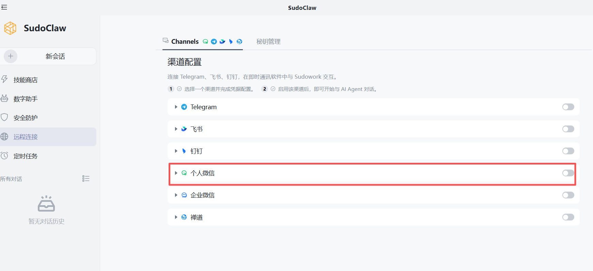
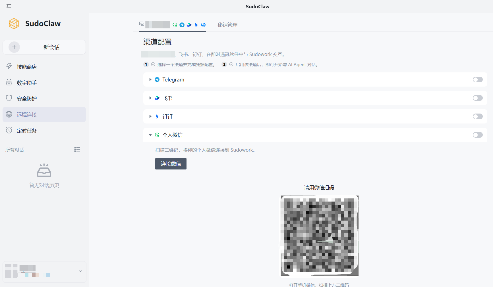

个人微信接入指南
通过 SudoClaw 的个人微信渠道配置，将 SudoClaw 接入微信，直接在微信中发送任务并接收执行结果
前提条件
- 已在电脑上安装并登录 SudoClaw
- 手机上已登录一个可正常使用的 微信 >= 8.0.70
个人微信接入无需填写 App ID、App Secret 等开发凭证，只需扫码即可完成绑定。
步骤一：打开渠道配置
- 1
打开 SudoClaw
- 2
进入 远程连接 → 渠道配置
- 3
在集成列表中找到 个人微信
- 4
点击 个人微信，点击下方的 连接微信

步骤二：扫码完成绑定
- 1
二维码生成后会直接显示在卡片下方，打开手机微信扫描该二维码
- 2
扫码完成后，卡片状态会变为 已连接
- 3
需更换账号，可以点击右侧开关后重新绑定

二维码有时效限制。如果二维码过期或扫码失败，请点击「重试」生成新的二维码。
步骤三：开始使用
绑定完成后，您就可以直接在微信里和 SudoClaw 对话，例如：
- 帮我总结今天桌面上最新的会议记录
- 帮我检查这个项目最近改过的接口有没有明显问题
- 帮我生成一个登录页原型
SudoClaw 会在电脑上自动执行任务，并把执行过程和最终结果同步回微信聊天窗口。
当微信消息到达时，SudoClaw 会自动切换到对应的会话并处理任务，无需手动切换。
常见问题
页面一直停留在「绑定中...」怎么办？
- 确认电脑上的 SudoClaw 正在运行，且网络连接正常
- 关闭当前配置窗口后重新进入个人微信配置
- 如果问题仍然存在，重启 SudoClaw 后重新绑定
扫码后没有显示「已连接」怎么办？
- 确认扫码使用的是您希望绑定的微信账号
- 等待几秒钟让绑定状态同步
- 如果二维码已经失效，请点击「重试」生成新的二维码后再次扫码
微信里发消息没有响应怎么办？
- 确认电脑上的 SudoClaw 仍在运行，且渠道配置服务未关闭
- 返回「远程连接」 → 「渠道配置」检查 WeChat 状态是否仍为「已连接」
- 如有必要，可先解绑后重新扫码绑定